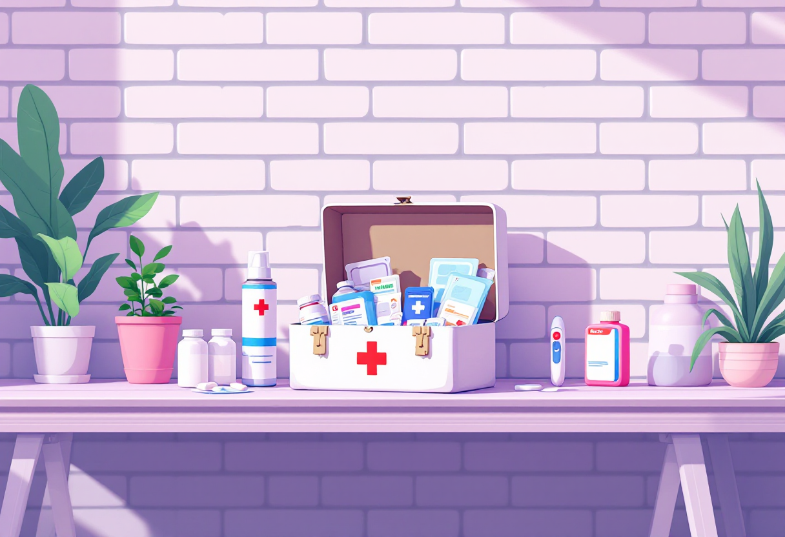

Базовий набір для дому
Що варто купити після переїзду

Кухня
Що знадобиться на початку
Для щоденного приготування їжі зазвичай достатньо:
- каструлі та сковороди;
- кухонного ножа і дошки для нарізання;
- тарілки, чашки, виделки, ложки та ножа;
- чайника;
- контейнерів для зберігання продуктів.
Що можна докупити пізніше
- додатковий посуд для гостей;
- овочечистку, друшляк, відкривачки;
- форми для випікання та кухонні аксесуари.

Прибирання та гігієна
Базовий набір
Для підтримання чистоти достатньо:
- губок і ганчірок;
- засобу для миття посуду;
- універсального засобу для прибирання;
- сміттєвих пакетів;
- швабри або пилососа;
- мила, шампуню та туалетного паперу.
Що можна докупити пізніше
- спеціалізовані засоби для різних поверхонь;
- органайзери для зберігання;
- додатковий інвентар для прибирання.

Спальня та ванна кімната
Найнеобхідніше
- подушка та ковдра;
- комплект постільної білизни;
- рушники для тіла та рук;
- кошик для брудної білизни.
Пізніше
- другий комплект постільної білизни;
- наматрацник;
- килимок для ванної кімнати.

Інструменти та корисні дрібниці
Навіть у звичайному побуті часто виникають дрібні завдання, для яких потрібні базові інструменти.
На початку варто мати:
- набір викруток;
- рулетку;
- скотч;
- ліхтарик або павербанк;
- запасні лампочки.
Згодом можна докупити молоток, плоскогубці та інші інструменти за потреби.

Аптечка
Базова домашня аптечка має містити:
- антисептик;
- пластирі;
- бинт або стерильні серветки;
- термометр;
- ліки, які ти регулярно приймаєш.